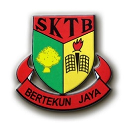
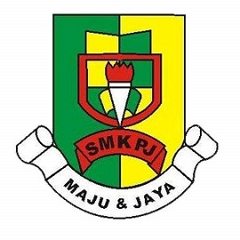
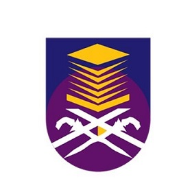

|
My Biography | My Family | My Education | My Experience | My Favourite | My Gallery | |
|  | Primary School |
| I studied at Sekolah Kebangsaan Tikam Batu or can be called SKTB. Sekolah Kebangsaan Tikam Batu located at Tikam Batu, Sungai Petani. Sekolah Kebangsaan Tikam Batu (SKTB) only located quite near my house. I need only to cross one traffic light only. There are another route that need to face market. SK Tikam Batu also near to the SK Berapit with different route which one in hill. I use van until i reach 10 years old and ride bicycle for my rest two years. My result for my UPSR is 3A and 2B |
|  | Secondary School |
| In secondary school, i studied at Sekolah Menengah Kebangsaan Pekula Jaya or can be called as SMK Pekula Jaya or SMKPJ. Sekolah Menengah Kebangsaan Pekula Jaya (SMKPJ) located more near than my primary school. SMK Pekula Jaya or SMKPJ located before the traffic light that i need to cross for my primary school. I still ride bicycle until i finish study in secondary school. SMK Pekula Jaya is the new name from the name SM Tikam Batu. My result for my PT3 is good without any fail and C and D on it and my result for my SPM is 3A, 5B, and 1C. |
|  | University |
| Now i am study at University Technology MARA and can also be called as UiTM. UiTM have a lot branch and i study at UiTM in branch Merbok, Kedah. UiTM is university that have a lot of branches with the main is in Shah Alam. In UiTM i study course Library Management, one from two course that have in Faculty of Information Management. Now i am in semester 4 and it is my last semester in Diploma of Library Management. |